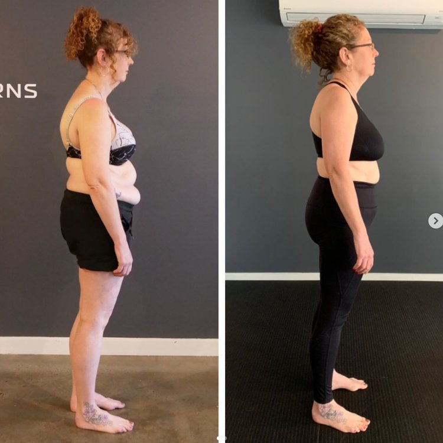

If your hip flexors always feel tight… they’re probably not the problem
You stretch them. You foam roll them. You try to “open your hips.” It might feel better for a few minutes, maybe even a few hours. But then the tightness comes straight back. That’s the pattern most people get stuck in.
If you’re dealing with tight hip flexors, the issue usually isn’t that they’re short. It’s that they’re doing more work than they’re designed to handle. What you’re feeling as “tightness” is often your body trying to stabilise something it doesn’t trust.
What are tight hip flexors?
Your hip flexors aren’t just there to lift your leg. They help control your pelvis, manage load when you walk or run, and assist with balance and coordination. When everything is working well, they share that job with other muscles.
But when that system breaks down, they start taking over. They become the muscle that does a bit of everything — lifting, stabilising, controlling — and over time, that creates constant tension. So while it feels like they need to be stretched, what they actually need is less responsibility.
1. Persistent hip tightness that never fully resolves
One of the clearest signs is that the tightness never really goes away. You might get temporary relief from stretching or massage, but it always returns. That’s because you’re not changing the reason they’re tightening in the first place.
This usually shows up as a dull, nagging tightness at the front of the hip, especially after sitting or training. It’s not sharp enough to feel like an injury, but it’s always there in the background.
2. Limited movement that feels blocked, not just stiff
A lot of people describe their hips as “tight,” but what they’re really experiencing is a lack of control through certain ranges. When you try to extend your hip — like in a lunge or when walking — it doesn’t feel smooth. It feels restricted, almost like something is stopping the movement.
That’s not just a flexibility issue. It’s your body avoiding a position it can’t control properly, so it creates tension instead.
3. Lower back discomfort that comes and goes
Tight hip flexors often show up as lower back discomfort, especially after sitting or standing for long periods. When the hip flexors are overworking, they pull on the pelvis in a way that the lower back has to compensate for.
You’ll often notice that moving around helps, but the discomfort comes back again later. That’s a sign the system isn’t resolving the load — it’s just shifting it.
4. Walking or running feels heavy and inefficient
When your hip flexors dominate your movement, your stride changes. Instead of force moving smoothly through your body, it gets stuck and redirected. That makes walking or running feel heavier than it should.
People often describe this as feeling like they’re “dragging” their legs or fatiguing quickly, even when their fitness is good. That’s not a conditioning issue — it’s a coordination issue.
5. Constant tension through the front of the thighs
If your quads always feel switched on, even when you’re not doing much, your hip flexors are likely over-involved as well. These muscles tend to work together, so when one is compensating, the other usually follows.
This creates that familiar feeling of tight, overworked legs that never fully relax, no matter how much stretching you do.
6. Posture that won’t hold, no matter how much you think about it
You can consciously stand up straight, but it doesn’t last. Within a few minutes, you’re back in the same position. That’s because posture isn’t just about awareness — it’s about whether your body can support that position without strain.
If your hip flexors are overworking, they’ll keep pulling your pelvis into a position that your system defaults to, regardless of how much you try to correct it.
7. You’re doing everything “right”… but nothing changes
This is the biggest one. You’re stretching, strengthening, foam rolling — and still dealing with the same tightness. That’s when it becomes clear the issue isn’t a lack of effort. It’s that the approach isn’t addressing the actual problem.
When the cause is how your body distributes force, no amount of isolated work will fix it long term.
Why your hip flexors keep getting tight
Your hip flexors tighten because they’re compensating for a system that isn’t sharing load properly. If your pelvis isn’t stable, your glutes aren’t integrating well, or your hips aren’t rotating effectively, something has to pick up the slack.
The hip flexors are well positioned to do that, so they step in. Over time, that constant demand creates the tightness you feel.
How to release tight hip flexors (properly)
Stretching can reduce tension temporarily, but it won’t change why the tension is there. If you want lasting change, you have to reduce the need for your hip flexors to compensate.
That means improving how your body moves as a whole. When your pelvis is better controlled, your hips move more freely, and your muscles share load more evenly, the hip flexors naturally stop overworking. The tightness resolves as a byproduct of better function.
When to seek help
If your symptoms are persistent, worsening, or affecting your ability to move normally, it’s worth getting assessed properly. Especially if you’ve already tried the usual approaches and nothing has changed.
At that point, you’re not dealing with simple tightness — you’re dealing with a pattern that needs to be addressed more specifically.
Conclusion
If your hip flexors feel tight all the time, it’s not because they’re failing. It’s because they’re trying to do too much in a system that isn’t working efficiently.
You can keep chasing the tension, or you can change the conditions that are creating it.
40 & 90 Minute Assessments Available
— Louis Ellery
Bachelor of Physiotherapy
Level 4 HBS in Human Biomechanics
Cert IV in Fitness
15+ years experience